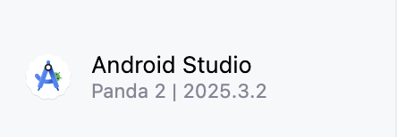
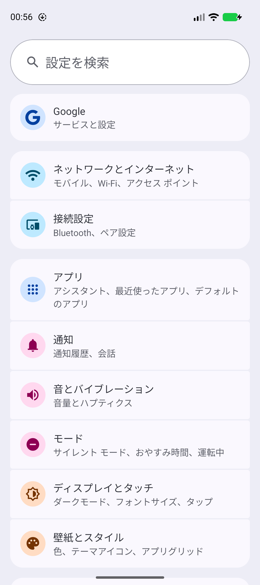
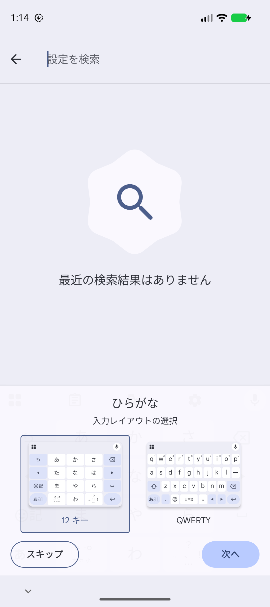
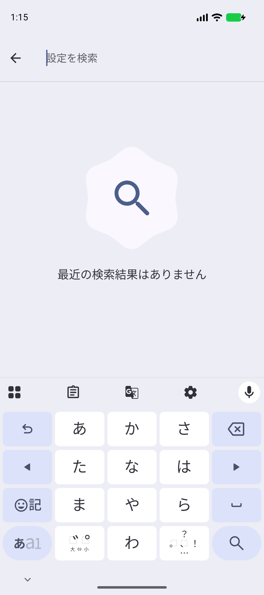
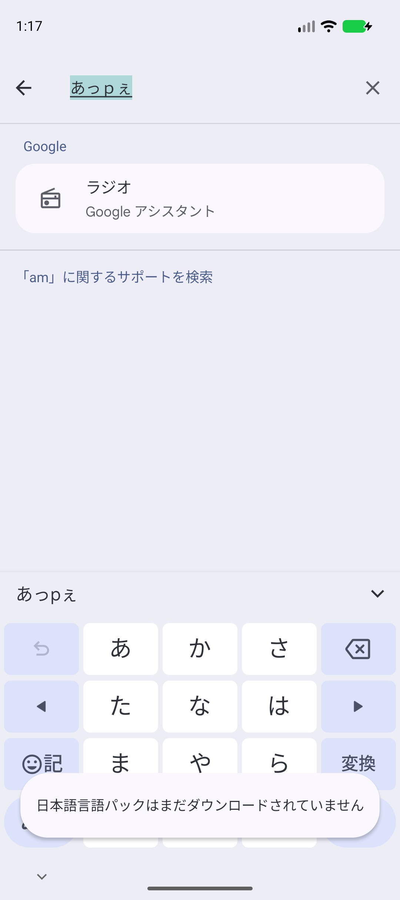
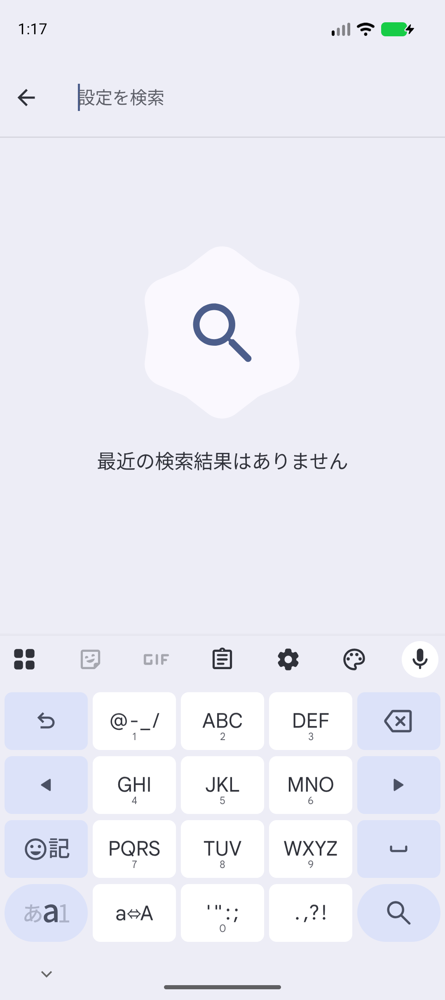
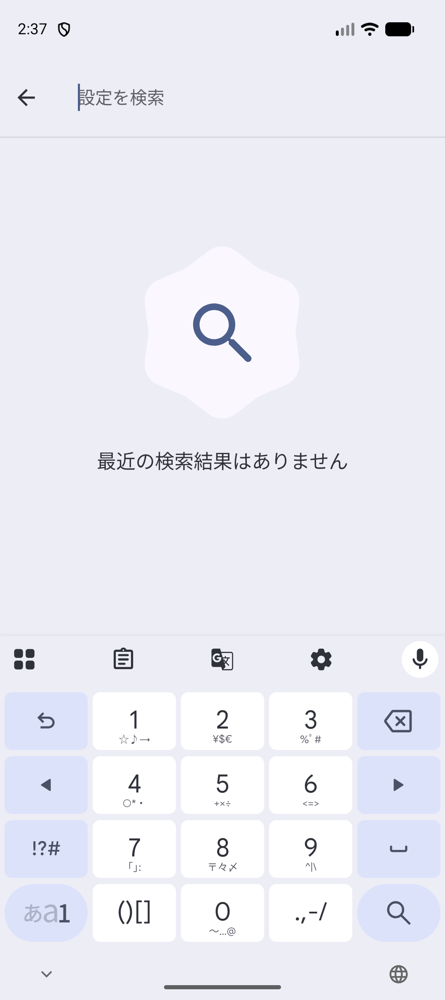

ANDROID PROGRAMMING 1 / 共通資料・授業サポート
授業を始めるまでの
準備
教材を受け取ってから、最初のアプリが動くまで。上から順に1回だけ行います。2回目からは、教科書を開くところから始められます。
この資料の流れ
番号は、下の見出しの番号と同じです。③・④・⑥では、Terminal（ターミナル）に文字を打ちます。そのほかは、FinderやAndroid Studio、エミュレータの画面を操作します。
つまずいたら、そこで止めて先生を呼んでください
各ステップに「成功の目印」があります。目印と違う画面になったら、先に進まずに、その画面のまま先生に見せてください。前に戻ってやり直すより早く終わります。
この準備が終わると
自分のMacで、日本語が打てるAndroidの練習用端末が動き、A01の完成アプリを実行できる状態になります。
1. 教材を受け取り、「書類」に置く
授業で使う教科書（きょうかしょ）は、Google Classroomで配られます。ファイルを1つダウンロードし、置き場所を決めるところまでを行います。
- Google Classroomを開き、先生が配布した教材のファイルをダウンロードします。
- Finder（ファインダー）を開き、左側の ダウンロード をクリックします。
- いちばん上に、今ダウンロードしたものがあります。次の2つのどちらかです。
| ダウンロードにあるもの | すること |
|---|---|
名前が .zip で終わるファイル | ダブルクリックします。同じ名前のフォルダができます。 |
| すでにフォルダになっている | そのままで大丈夫です。ZIPファイルが自動で展開され、同じ名前のフォルダができています。 |
どちらの場合も、最後はフォルダが1つある状態になります。名前には、次のように日付が入ります。
android1-student-materials-2026-09-19日付の部分は、先生が配った教材がいつのものかを表します。配られた回によって変わるので、上と同じ日付でなくても構いません。
- このフォルダを、Finderの左側の 書類 へドラッグして移動します。
- 移動した先のフォルダをダブルクリックして開き、中身を確認します。
成功の目印
「書類」の中のフォルダを開くと、docs と samples という2つのフォルダと、はじめに.txt、VERSION.json がある。
新しい版をもらったときも、同じことをします
この科目を受講している期間中に、先生から新しい版の教材が配られることがあります。そのときも、この手順のまま「書類」へ移動してください。フォルダ名の日付が違うので、前のものとは別のフォルダになり、混ざりません。古いほうは消さずに残しておいて大丈夫です。
授業中は、先生が「今日はこの日付のものを使います」と指定します。開く前に、フォルダ名の日付を確かめてください。
ダウンロードしたものが見つからない・名前が少し違う
同じ教材を2回ダウンロードすると、名前のうしろに (1) や -2 が付くことがあります。このときは古いほうを開いてしまうことがあり、画面には何のエラーも出ません。名前にそういう印が付いていたら、自分で判断せず先生に見せてください。
2. Android Studioを開き、版（バージョン）を確かめる
Android Studio（アンドロイド スタジオ）は、アプリを作るためのアプリです。授業で使うMacには、あらかじめ入っています。
- Launchpad（ランチパッド）かDockから Android Studio を開きます。
- 最初に出る画面（Welcome画面）の左上を見ます。名前と版が2行で表示されています。

成功の目印
最初の画面の左上が Android Studio / Panda 2 | 2025.3.2 になっている。
この画面は、まだ何も開いていないときに出ます。すでにプロジェクトが開いている場合は、そのウィンドウを閉じると出てきます。
版が違った・Android Studioが見つからない
版が違っても、多くの操作はそのまま進められます。画面の名前が教科書と違うときの読み替えは、共通資料：ちがうAndroid Studioのバージョンで進めるときにまとめてあります。Android Studioが見つからない場合は、先生に知らせてください。
3. 自分のプロジェクトの置き場を作る
この授業では、毎回自分でプロジェクト（アプリ1つ分のファイルのまとまり）を新しく作ります。その保存先を、先に用意しておきます。
ここからは Terminal（ターミナル）を使います。文字で命令を打つためのアプリです。
- ⌘ Command + Space を押します。画面の中央に検索欄が出ます。
- ターミナル と打ち、Enter を押します。黒っぽいウィンドウが開きます。
- 次の1行をコピーして貼り付け、Enter を押します。
mkdir -p ~/Documents/Android1成功の目印
何も表示されずに、次の入力待ちに戻る。出力がないのが成功です。
すでに同じ場所を作ってあっても、エラーにはなりません。2回実行しても問題ありません。
このあと、同じTerminalのウィンドウを使い続けます
手順4で行う設定は、いま開いたこのウィンドウの中だけで効きます。準備が終わるまで、閉じないでください。
4. SDKの場所を確かめ、adbを使えるようにする
SDK（エスディーケー）は、Androidのアプリを作るために必要なプログラムやライブラリをまとめたものです。Android Studioが自動で入れています。まず、入っているかを確かめます。
ls ~/Library/Android/sdk名前がたくさん並びます。その中に platform-tools があれば大丈夫です。
成功の目印
並んだ名前の中に platform-tools がある。
No such file or directory と出たとき
Android Studioの最初の準備が、まだ終わっていません。先に進まず、先生に知らせてください。
adbを呼べるようにする
adb（エーディービー）は、Macからエミュレータへ指示を送るコマンドです。platform-tools の中にありますが、そのままでは名前を呼んでも見つかりません。次の1行で、いま開いているTerminalに置き場所を教えます。
export PATH="$PATH:$HOME/Library/Android/sdk/platform-tools"この行も、成功すると何も表示されません。続けて、adbが呼べるようになったか確かめます。
adb devicesList of devices attached
1行だけ出て、その下に何も並びません。エミュレータをまだ作っていないので、これで正しい状態です。
その日の最初の1回だけ、上に次の2行が付くことがあります。これは正常です。
* daemon not running; starting now at tcp:5037
* daemon started successfully成功の目印
List of devices attached と表示される。エラーが出ない。
この設定は、Terminalを閉じると消えます
手順4で打った export の行は、いま開いているウィンドウの中だけで効きます。Terminalを閉じたり、新しいタブやウィンドウを開いたりすると、効果はなくなります。
そこで adb を使うと、次のように出ます。
zsh: command not found: adbこれが出たら、上の export の行をもう一度実行してから、やり直してください。Macの設定を書き換える必要はありません。打ち直すのは、この1行だけです。
adb を使うのは、この準備の手順4と手順6だけです。準備が終わったあとの授業で、この行を打つことはありません。
5. エミュレータを作る
エミュレータは、Macの中で動く練習用のAndroid端末です。作り方は共通資料にまとめてあります。
そのページを開いて、次の2つを決めながら進めてください。
| 決めるもの | この授業での指定 |
|---|---|
| 端末の名前 | jec_26cm_android1_Pixel 9a |
| System Image（端末を動かすデータ） | API 37.1 |
System Imageを選ぶときの注意
一覧には 37.2 も並びます。選ぶのは 37.1 のほうです。37.1 は名前に 16 KB Page Size と付いたものしかないので、それを選んでください。
まだMacに入っていない場合は、ダウンロードから始まります。時間がかかるので、始める前に先生に知らせてください。先生が準備した端末があれば、それを使います。
エミュレータが起動し、Androidのホーム画面が出たら、この資料に戻ってきてください。エミュレータは起動したままにしておきます。
成功の目印
スマートフォンの形の画面が開き、ホーム画面のアイコンが見えている。
6. エミュレータの表示を日本語にする
作ったばかりのエミュレータは、英語で表示されています。日本語に変えます。手順3・4で使っていたTerminalに戻ってください。
まず、Macからエミュレータが見えているか確かめます。
adb devicesList of devices attached
emulator-5554 device番号は 5554 でなくても構いません。1行増えていれば大丈夫です。
次に、表示を日本語にします。
adb shell cmd locale set-device-locale ja-JPこの行も、成功すると何も表示されません。日本語になったか確かめます。
adb shell cmd locale get-device-localeja-JP{kind=link}

成功の目印
ja-JP と表示される。エミュレータの画面の文字が日本語になっている。
この設定は残ります
エミュレータを止めて起動し直しても、日本語のままです。毎回やり直す必要はありません。キーボード（Gboard）も、同時に日本語になります。
adb: more than one device/emulator と出たとき
エミュレータが2つ以上起動しています。どれに指示を送ればよいか分からない、という意味です。使わないほうを閉じて、1つだけにしてから、もう一度実行してください。
7. 日本語のキーボードを使えるようにする
手順6で、キーボード（Gboard）も日本語になりました。ただし、最初に1回だけ、キーボードの形を選ぶ画面が出ます。ここで選んでおくと、次からは出ません。
エミュレータの画面で操作します。文字を入力できるところなら、どこでも構いません。
- エミュレータで、文字を入力する欄をタップします。設定アプリの「設定を検索」の欄が分かりやすいです。
- ひらがな 入力レイアウトの選択 と出ます。左の 12 キー が選ばれた状態のまま、右下の 次へ をタップします。
{kind=link}

- 続けて アルファベット 入力レイアウトの選択 が出たら、同じように 12 キー のまま 完了 をタップします。この2ページ目は、出ないこともあります。
- キーボードが出ます。数字の電話のような形で、左下に あa1 というキーがあります。
{kind=link}

{kind=link}

apple と打つと あっpぇ になります。 画像を大きく開く「日本語言語パックはまだダウンロードされていません」と出たとき
日本語を漢字に変換するためのデータを、いま取りにいっています。1〜2分待つと、漢字の候補が出るようになります。操作は要りません。Macがインターネットにつながっている必要があります。
ひらがなとアルファベットを切り替える（あa1キー）
この授業では、アプリに英語を入力する場面があります。ひらがなのモードのまま、Macのキーボードで apple と打つと、上の②のように あっpぇ になってしまいます。
そのときは、キーボードの左下の あa1 を押します。押すたびに、次の順で切り替わります。
{kind=link}

apple と打てます。 画像を大きく開く{kind=link}

いま選ばれているモードは、あa1 の中の文字が濃くなって分かります。ひらがなに戻したいのに数字が出るときは、もう1回押してください。
成功の目印
あa1 を押して、apple と英語で打てた。もう2回押して、ひらがなに戻せた。
8. そのほかの設定は、変えなくて大丈夫です
エミュレータの次の設定は、最初のままで教科書と同じ動きになります。触らないでください。
| 設定 | どうする |
|---|---|
| ナビゲーション（戻る・ホームの操作） | そのまま |
| 画面の回転 | そのまま |
| タイムゾーン（時計） | そのまま |
| フォントサイズ（文字の大きさ） | そのまま |
インターネット接続だけ確認してください
Macがインターネットにつながっている必要があります。キーボードの漢字の変換候補や、授業で作るアプリの動作に使います。
9. 動くことを確かめる
最後に、できあがった環境でアプリが動くことを確かめます。A01の完成プロジェクト（先生が作った見本）を開いて実行します。見本は、手順1で「書類」に置いた教材のフォルダの samples に、そのまま開ける形で入っています。ダウンロードも展開も要りません。
- Android Studioの最初の画面で Open をクリックします。
- 手順1で「書類」に置いた教材のフォルダを開き、その中の
samplesフォルダを開きます。一覧にあるA01HelloAndroidフォルダを選び、開く（Open） をクリックします。 - 画面の下で Gradle Sync という処理が終わるまで待ちます。初回は数分かかります。
- 上部の端末の選択欄で
jec_26cm_android1_Pixel 9aを選び、Run ▶ をクリックします。
成功の目印
エミュレータにアプリが表示され、Hello World! という文字と、その下にボタンが並んでいる。
ここまでできたら、準備は終わりです。次の授業からは、教科書を開くところから始められます。
10. うまくいかないとき
| 出たもの・起きたこと | やってみること |
|---|---|
zsh: command not found: adb | 手順4の export の行をもう一度実行する。Terminalを開き直すと、毎回この状態に戻る。 |
adb: more than one device/emulator | エミュレータが2つ以上起動している。1つだけにしてやり直す。 |
adb devices にエミュレータが出ない | エミュレータのホーム画面が出ているか確認する。起動の途中なら待つ。 |
ls ~/Library/Android/sdk で No such file or directory | Android Studioの最初の準備が終わっていない。先生に知らせる。 |
| エミュレータが日本語にならない | adb shell cmd locale get-device-locale の結果を確認する。ja-JP 以外なら、手順6をもう一度行う。 |
| 漢字の候補が出ない | Macがインターネットにつながっているか確認し、1〜2分待つ。 |
ダウンロードしたフォルダの名前に (1) や -2 が付いている | 古い教材を開いている可能性がある。自分で判断せず先生に見せる。 |
| Runが押せない・端末が選べない | 共通資料：エミュレータの準備とアプリの実行の「5. 動かないとき」を見る。 |
表にないことが起きたら、その画面のまま先生に見せてください。Terminalの場合は、打った行と出た文字の両方が見えるようにしておくと早く分かります。
関連する共通資料
- エミュレータの準備とアプリの実行（手順5で使います）
- Auto Importの設定（A01のSTEP 1で行います）
- ちがうAndroid Studioのバージョンで進めるとき（自分のMacなどで進めるとき）